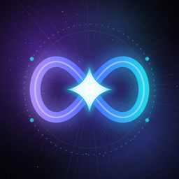

NEXUS INFINITY
The bot of the NEXUS INFINITY anime community on Discord: levels, anime alerts, events, protection — and the newest edits.
Join the DiscordWhat the bot does
- Levels, quests and leaderboards for active members
- Anime search and alerts when a new episode of a show on your watchlist airs
- Community events, support tickets and moderation (NEXUS Guardian keeps scams out)
- TikTok edits: new edits from the server owner are posted and announced in the server, with their views, likes, comments and shares
The TikTok connection
The server owner can connect their own TikTok account. NEXUS then reads the profile name and the numbers of that account’s public videos. It never posts, changes or deletes anything on TikTok, and the access can be ended at any time. Details are in the Privacy Policy.